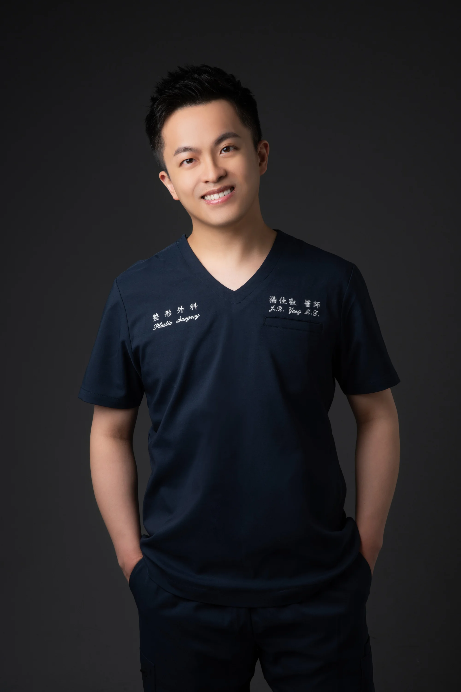

整形外科專科醫師
Jia-Ruei Yang, MD
從顱顏重建到美容手術，用專業與溫度陪伴每一位患者
仁愛長庚合作聯盟醫院 整形外科科主任桃園長庚紀念醫院 整形外科主治醫師

顏面骨折的精確評估與重建，恢復骨骼輪廓與功能。
找出阻礙癒合的根本原因，從清創換藥到皮瓣移植，協助傷口回到正常癒合軌道。
正顎手術、顴骨與下頷骨削骨，從骨骼結構根本調整臉型比例與咬合功能。
從眼周手術到中下臉拉皮，恢復自然的解剖位置，讓外表回到與自己狀態相符的樣子。
整形外科 科主任
整形外科 主治醫師